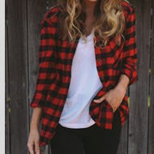

<ion-modal-view class="photo_page">
    
	<div class="close" ng-click="closeModal()">
		<i class="ion-close-round"></i>
	</div>

	<ion-scroll zooming="false" direction="x">
		<div class="photo_group_thumbnail">
			<div ng-repeat = "thumbnail in photoThumbNails" class="thumb_ele {{thumbnail.class}}" >
				<div class="thumb_ele_text">{{thumbnail.name}}</div>
			</div>
		</div>
	</ion-scroll> 

	<div class="camera_roll">
 		<div class="thumbnail"> 
 			
 		</div>
		<a ng-href="#/category" ng-click="closeModal()">
			<div class="camera_button">
				<div class="content">Crop</div>
			</div>
		</a>

		<div ng-click="closeModal()" class="button-right">save</div>
    </div>
    
</ion-modal-view>